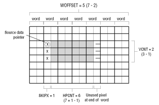

Not all source data sharing is as simple as the previous example, which assumes that each cel uses the same source data dimensions, that is, each cel uses the full car as its source data image. A cel can use just part of an existing source data file, such as the wheel of a car cel. Or a cel might use a section of a bitmap to copy part of existing images on a screen. For example, a program could select a subrectangle of a photographic image on the screen and then magnify the subrectangle by projecting it as an enlarged cel. To extract a subrectangle of cel source data from an existing image, you must set the proper source data pointer in the CCB and set appropriate cel dimensions and offsets in the preamble.
CCBPRE flag of the CCB's FLAGS word to 1. You must also specify that this cel is unpacked (you cannot extract a subrectangle from packed data) by setting the PACKED flag of FLAGS to 0.
The CCB must point to the address of the word where the first subrectangle pixel appears. To find that address within a bitmap, you can use the GetPixelAddress() call, which accepts bitmap coordinates of a pixel and returns the absolute address of the word where the pixel is stored. You then set the SPABS flag of FLAGS to 1, which specifies an absolute cel source data pointer, and add the address to the CCB in the SOURCEPTR word.
Your next task is to create the appropriate two-word preamble for the source data and store them as the PRE0 and PRE1 words of the CCB.
Creating a Preamble for Extracted Data
The preamble contains the dimensions used to define the subrectangle and the offsets that skip over words and pixels between the end of one row and the beginning of the next row.
To define the width of the subrectangle, figure the number of pixels in a row do the following:
HPCNT of the second preamble word.
VCNT of the first preamble word.
HPCNT = 6; the height is 3 pixels, so VCNT = 2.

Figure 1: Extracting a subrectangle.
In Figure 1, the source data pointer in the CCB determines the starting word of the source data. You must set the SKIPX value in the first preamble word the number of pixels necessary to get to the first pixel of the subrectangle. If the first subrectangle pixel falls on the word boundary, you do not need to skip any pixels, and SKIPX = 0. If the first pixel falls after the word boundary, you need to skip one or more pixels by setting SKIPX appropriately. In the example in Figure 2, which uses 16-bit pixels that are stored two to a word, the subrectangle starts in the second half of a word. Setting SKIPX to 1 tells the cel engine to skip the first pixel within the starting word of each row so the subrectangle starts on the second pixel of the word.
Note: Pixels skipped by SKIPX are part of the HPCNT value.
The cel engine uses the dimension set with HPCNT to count pixels as it projects a row of pixels; when it is finished counting the row, it uses the WOFFSET value (in the second preamble word) to calculate the address of the beginning word of the next row, and then moves there. The cel engine uses SKIPX again to skip any pixels necessary within the row's first word to get to the beginning pixel.
To determine WOFFSET, count full words only from the beginning of one row to the beginning of the next, subtract 2, and then enter the value as WOFFSET. In the example in Figure 2, the word offset is 7, which is the word count from the beginning of one subrectangle row to the beginning of the next subrectangle row. (It is also the full width in words of the original source data.) After subtracting 2, WOFFSET = 5. For cels of 1-, 2-, 4-, and 6-bpp, use WOFFSET(8) to store the word offset value; for cels of 8- or 16-bpp, use WOFFSET(10). If you're extracting a subrectangle from a 16-bpp uncoded bitmap such as the frame buffer, you need to set LRFORM to 1 in the second preamble word so the cel engine can handle the left/right format of the pixels stored there.
Once you've defined a subrectangle with the source data pointer, vertical and horizontal dimensions, and the word and pixel offsets, you must make sure that the rest of the preamble data matches the format of the pixels you're using in the subrectangle. Set UNCODED, REP8, BPP, and other preamble values appropriately.
Note: When extracting a subrectangle from 6-bit source data, do not set WOFFSET to point to a word boundary that falls in the middle of a 6-bit pixel. Because the 32 bits of a word are not divided evenly by 6, some 6-bit pixels are split across word boundaries. Word beginnings and 6-bit pixel beginnings coincide every third word (word 0, word 3, word 6, word 9, and so on), so you should safely point to the beginning of a pixel as long as the CCB's pointer to the source data correctly points to a word beginning that does not divide a 6-bit pixel.